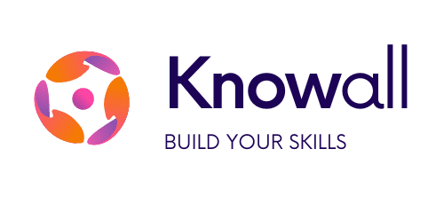
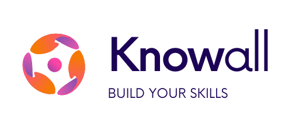

our history
the story of silent library
Silent Library was founded in the early 2001 by a group of bibliophiles frustrated with the lack of a public library in their area. Tired of all the noise and distrations of their usual hawker stall gatherings, they wanted a peaceful and quiet place surrounded by books and like-minded individuals. They have long dreamed of a place where they could peacefully peruse the shelves and lose themselves in the pages without the constant chatter and hustle and bustle.
So, they decided to take matters into their own hands and started their own library - a quiet, peaceful haven for book lovers. They called it Silent Library, and it quickly became a beloved destination for readers of all ages.
Over the years, Silent Library has evolved and grown, but our commitment to fostering a culture of learning and discovery has never wavered. We continue to offer a wide range of books, digital resources, and events to help our members explore new worlds and ideas. So, if you're in search of a quiet, peaceful place to read, come join us at Silent Library - we promise not to make a peep.


 
